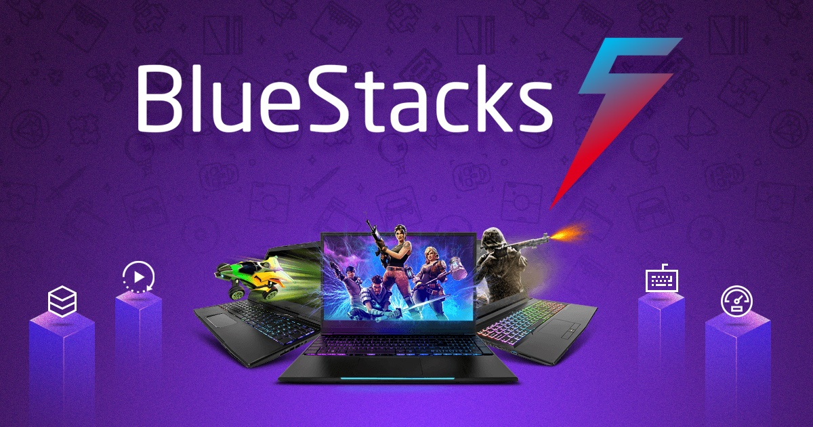
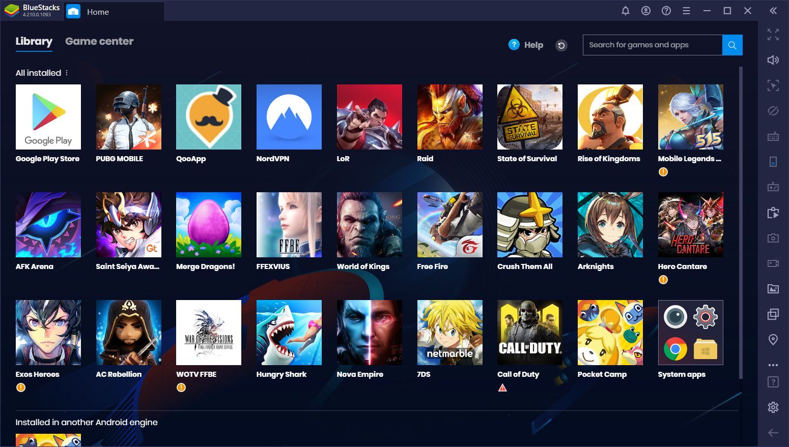
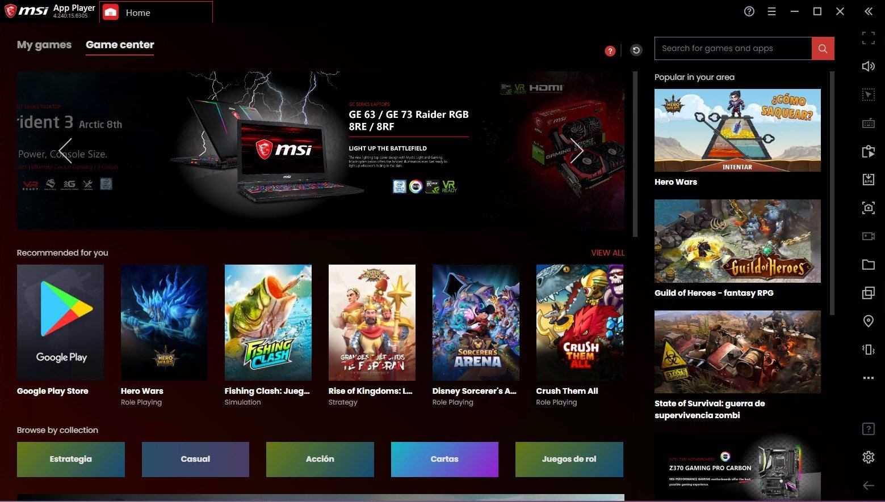
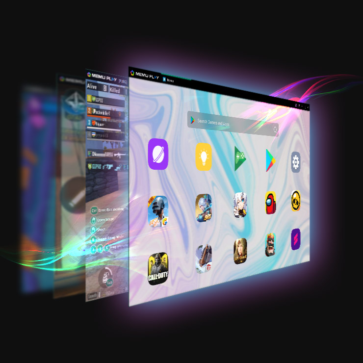
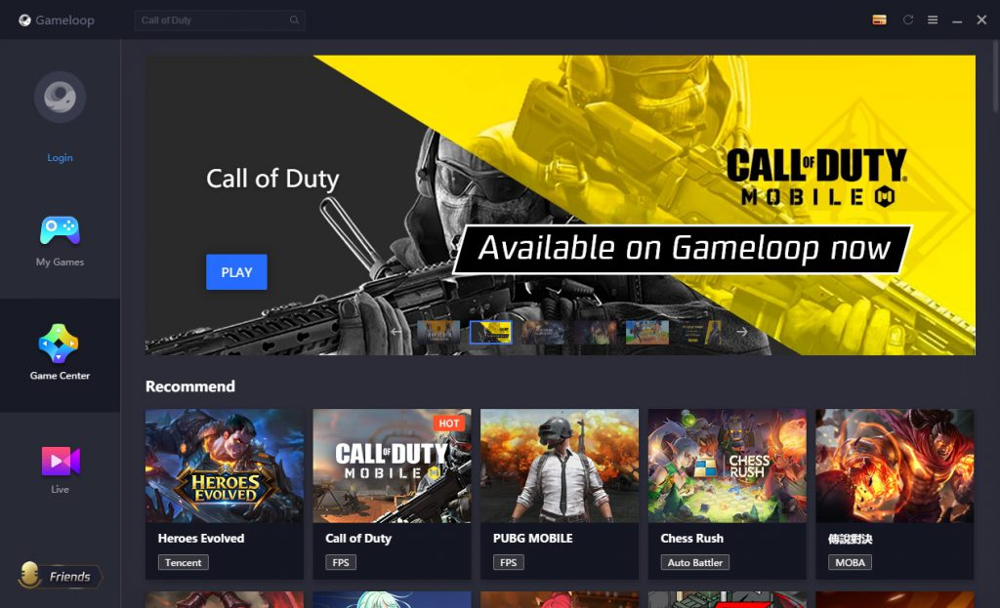
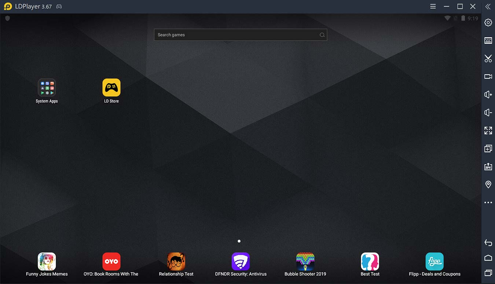
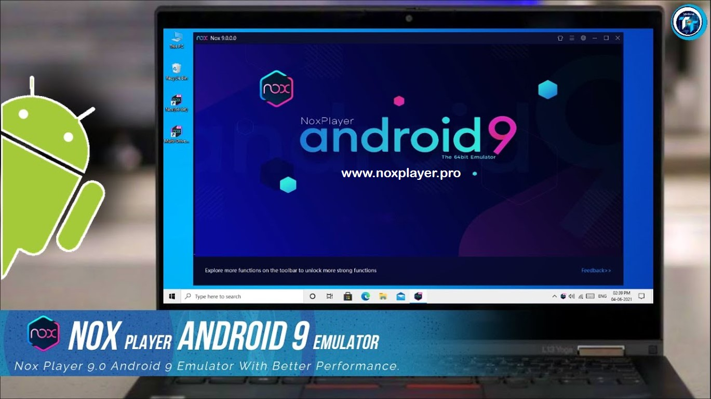

- Bluestacks 5

Bluestacks 5 is one of the best emulator for the windows,it's compatible with low end pc also,let's talk about its advantages and disadvantages.
- Advantages:
1.Compatible with low-end PC.
2.Uses 40% less ram than bluestacks 4.
3.Usable without graphic card.
4.Don't slow down your pc
5.No-Ban free emulator
- Disadvantages
1.Not fast performance than bluestacks 4.
2.FPS Drop Problem while playing a game.
3.Smart Controls stuck problem.
4.Lags more than other emulators While Recording.
5.Don't support more than 40 fps on 32 bit Processor even your display has 90 hertz of refresh rate.
Specifications needed to run Bluestacks 5:
1.Ram
- Minimum:2 GB
- Recommended:4 GB
- Best Performance:8 GB
2.Processor
- Minimum:2 cores and 4 threads with 1.66GHZ clock speed.
- Recommended:4 cores and 8 threads with 2.30GHZ clock speed.
- Best Performance:6 cores and 12 threads with 3.20GHZ clock speed.
3.Storage
- 5 GB of free space in your PC.
4.Graphic Card
- Minimum:Direct X (No graphic card required).
- Recommended:2 GB of at least integrated graphic card.
- Best Performance:2 GB of Dedicated graphic card is equal to GTX 730 or GTX 960.
I recommend that download the 32 bit version of bluestacks 5 even your pc has a 64 bit processor either 32 bit.
Download Bluestacks 5
- Bluestacks 4

BlueStacks 4 is best emulator than BlueStacks 5 but a medium-end PC will be needed,Let's talk about its advantages and disadvantages.
- Advantages
1.Supports 60-75 fps on 32 bit processor.
2.No-Ban free emulator
3.Supports 90+ fps.
4.Supports 60% more smoothness in game than BlueStacks 5 and BlueStacks 3.
5.Smart Controls don't stuck,no sensitivity problem.
- Disadvantages
1.Uses 80% of your PC'S ram at a time.
2.May slow down your PC.
3.Cannot use without Graphic card(if use without graphic card too much of lag will be there.)
4.Not compatible with low-end PC.
5.Game crashes problem while playing.
Specifications needed to run bluestacks 4:
1.Ram
- Minimum:4 GB
- Recommended:6 GB
- Best Performance:8 GB
2.Processor
- Minimum:2 Cores and 4 Threads with 2.00GHZ Clock Speed.
- Recommended:4 Cores and 8 Threads with 2.70 GHZ Clock Speed.
- Best Performance:6 Cores and 12 Threads with 3.40GHZ Clock Speed.
3.Storage
- 5 GB of free space on your PC.
4.Graphic Card
- Minimum:1 GB of integrated graphic card.
- Recommended:2 GB of dedicated graphic card is equal to GTX 730 or GTX 960.
- Best Performance:4 GB of dedicated graphic card.
I recommend that download the 32 bit version of BlueStacks 4 even you have a 64 bit processor either 32 bit.
Download BlueStacks 4
- MSI App Player

MSI app player is very similar to bluestacks 4 bit some things are different,let's talk about its advantages and disadvantages.
- Advantages
1.Supports Max FPS in Game.
2.Less Lag than bluestacks 4.
3.Supports low end PC.
4.Usable without Graphic Card.
5.Supports 50-60 FPS on 32 bit Processor.
- Disadvantages
1.Uses 50% of your PC'S ram at a time.
2.Cause some lag in your PC.
3.Too much game crash problem than Bluestacks 4.
4.Support FPS according to your PC/Laptop display's refresh rate.
5.Not fast as bluestacks 4.
Specifications needed to run MSI App Player:
1.Ram
- Minimum:2 GB
- Recommended:4 GB
- Best Performance:8 GB
2.Processor
- Minimum:2 cores and 4 threads with 1.90GHZ clock speed.
- Recommended:4 cores and 8 threads with 2.30GHZ clock speed.
- Best Performance:6 cores and 12 threads with 3.00GHZ clock speed.
3.Storage
- 5 GB of free space in your PC.
4.Graphic Card
- Minimum:Direct X(no graphic card required)
- Recommended:1 or 2 GB of integrated Graphic Card.
- Best Performance:4 GB of dedicated Graphic Card.
Download MSI App Player
- Memu Player

Memu Player is one of the best performance emulator but it's totally depend on Graphic Card,let's talk about its advantages and disadvantages.
- Advantages
1.Support max FPS in game.
2.Usable without Graphic card.
3.Support low-end PC.
4.Don't slow down your PC
5.Don't use more than 40% of your PC'S availaible ram.
- Disadvantages
1.If you have a 1 GB or even 2 GB of integrated graphic card and render mode is openGL then there will be lag.
2.Smart controls issue(can play easily on standard mode).
3.Memu will not launch if many windows are open in background.
4.Game crash.
5.High resolution will cause some lag.
Specifications needed to run Memu Player:
1.Ram
- Minimum:1 GB
- Recommended:4 GB
- Best Performance:8 GB
2.Processor
- Minimum:4 cores and 8 threads with 2.30GHZ clock speed.
- Recommended:6 cores and 12 Threads with 2.80GHZ clock speed.
- Best Performance:8 cores and 16 threads with 3.40GHZ clock speed.
3.Storage
- 5 GB of free space in your PC.
4.Graphic Card
- Minimum:Direct X(no graphic card required) or if using openGL render mode then 2 GB of dedicated graphic card will be required is equal to GTX 730 or GTX 960.
- Recommended:4 GB of dedicated graphic card is equal to NVIDIA GE FORCE GTX 1650 or GTX 1660
- Best Performance:4 GB of dedicated graphic card is equal to NVIDIA GE FORCE GTX 1650ti or GTX 1660 super.
Download Memu Player
- GameLoop

GameLoop is one of the best emulator because it's automatic ram using system is best.The best thing is that you can run this emulator at 1 GB ram and core 2 duo only.
- Advantages
1.Automatic ram usage system(don't like other emulators like a limit of 3 or 4 GB ram.)
2.Supports low-end 1 GB ram PC.
3.Usable without graphic card.
4.No lag.
5.Support games at 90 FPS.
- Disadvantages
1.Smart controls error.
2.Sensitivity problem.
3.Cannot set X and Y sensitivity according to yourself.(can use DPI only as sensitivity)
4.Cannot download without VPN.
5.Don't support max FPS on games.(not above 90 FPS)
Specifications needed to run GameLoop:
1.Ram
- Minimum:1 GB
- Recommended:4 GB
- Best Performance:6 GB
2.Processor
- Minimum:2 Cores and 4 threads with 1.66GHZ clock speed.
- Recommended:4 cores and 8 threads with 2.00GHZ clock speed.
- Best Performance:6 cores and 12 threads with 2.60GHZ clock speed.
3.Storage
- 5 GB of free space in your PC.
4.Graphic Card
- Minimum:Direct X (no graphic card required).
- Recommended:1 GB of integrated graphic card.
- Best Performance:2 GB of dedicated or integrated graphic card.
Download GameLoop
- LD Player

The best thing of the LD Player that it requires low specs and performs best.
- Advantages
1.Supports low-end PC with 1 GB ram.
2.Usable without graphic card.
3.Support 90 FPS in game.
4.Don't slow down your PC.
5.No-ban free emulator.
- Disadvantages
1.Sensitivity problem.
2.Game crashes.
3.Stuck problem.
4.without graphic card,the graphic quality will be worst.
5.High resolution may cause different type of problems like controls changing,sensitivity changing and lag.
Specifications needed to run LD Player:
1.Ram
- Minimum:1 GB
- Recommended:4 GB
- Best Performance:6 GB
2.Processor
- Minimum:2 cores and 8 threads with 1.66GHZ clock speed.
- Recommended:4 cores and 8 threads with 2.00GHZ clock speed.
- Best Performance:6 cores and 12 threads with 2.60GHZ clock speed.
3.Storage
- 5 GB of free space on your PC
4.Graphic Card
- Minimum:1 GB of integrated graphic card.
- recommended:2 GB of integrated or dedicated graphic card.
- Best Performance:4 GB of dedicated graphic card.
Download LD Player
- Nox Player

The best thing of Nox Player is that it has the android 9 os in 64 bit software.
- Advantages
1.Usable without graphic card.
2.Supports low-end PC.
3.No-ban free emulator.
4.Performs good on 1 GB ram.
5.Support 60 FPS in game.
- Disadvantages
1.Sensitivity problem.
2.Support 120 FPS in total.
3.Lag problem,while max ram giving limit is 6144 MB.
4.Slow down your PC.
5.Smart controls problem.
Specifications needed to run Nox Player:
1.Ram
- Minimum:1 GB
- Recommended:4 GB
- Best Performance:8 GB
2.Processor
- Minimum:2 cores and 4 threads with 1.80GHZ clock speed.
- Recommended:4 cores and 8 threads with 2.30GHZ clock speed.
- Best Performance:6 cores anbd 12 threads with 2.90GHZ clock speed.
3.Storage
- 5 GB of free space in your PC.
4.Graphic Card
- Minimum:Direct X(no graphic card required).
- Recommended:1 or 2 GB integrated or dedicated graphic card.
- Best Performance:4 GB of dedicated graphic card.
Download Nox Player
In end I want to say only that please use a android mobile instead of emulator on your PC becuase emulators cause many type of problems and they are harmful to your PC.